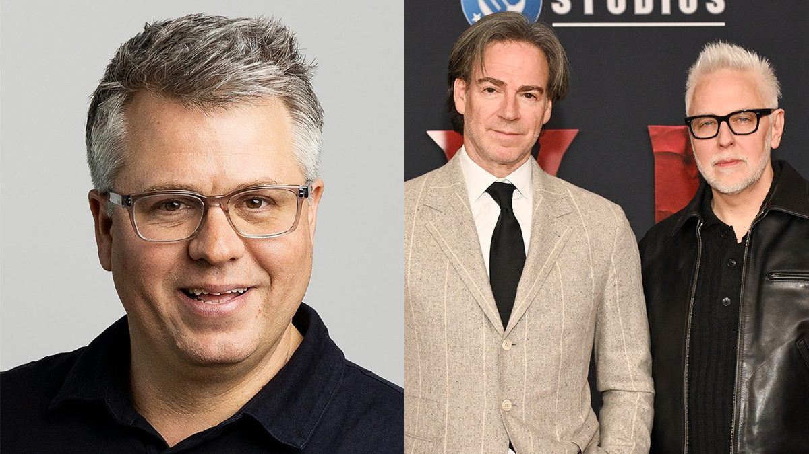
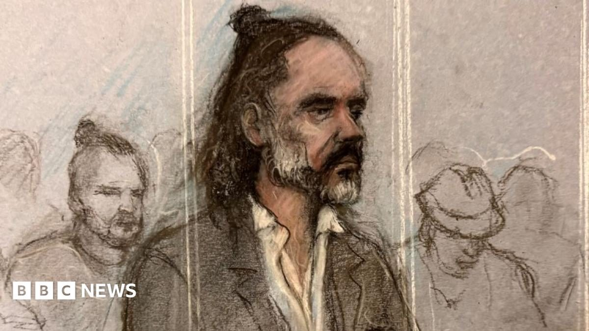
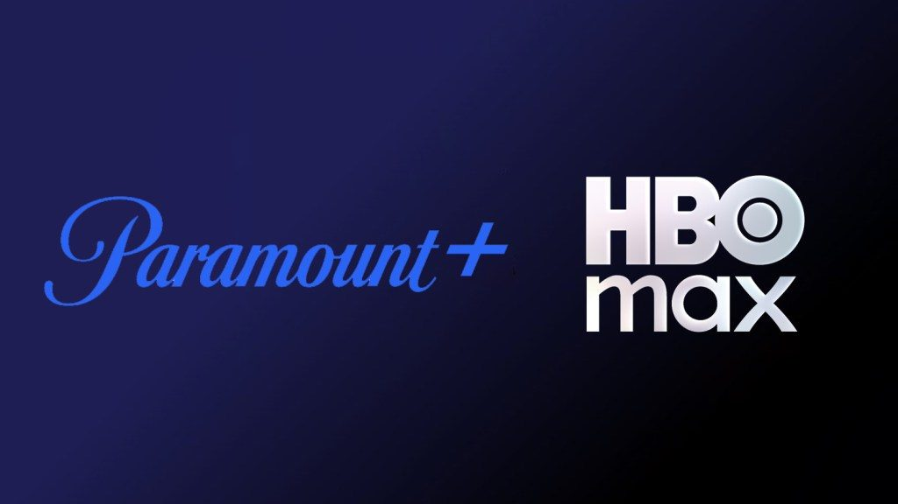

DC shocker: James Gunn and Peter Safran step down, and Marvel veteran Jeremy Latcham takes over

Skydance, which now owns Warner Bros. after closing its acquisition in October, announced Monday that Jeremy Latcham becomes president and chief creative officer of DC Studios on Dec. 1. Gunn and Safran, who rebooted the DC universe with Superman, Supergirl, Clayface and HBO’s Lanterns, will go back to full-time creative work. Variety calls it a firing; the exit was a surprise because the pair had just been named to David Ellison’s leadership team.
Latcham was one of Marvel Studios’ earliest hires and worked on Iron Man, The Avengers and Gunn’s Guardians of the Galaxy. Gunn wrote on Instagram that the job had been “trying, to say the least” and that he’s relieved to return to filmmaking. Man of Tomorrow stays on track for July 9, 2027, Gunn says he’s writing another DC film, and he and Safran remain producers on The Batman Part II. This is an executive story with no trailer, so the links go to the reporting.
 Variety →
·
Variety →
·
 Gunn’s statement (Variety) →
·
Gunn’s statement (Variety) →
·
 The Hollywood Reporter →
The Hollywood Reporter →
David Walliams is named as the star who tried to block sexual misconduct allegations
A joint Guardian and ITV News investigation published this morning accuses the Britain’s Got Talent judge and children’s author of grooming fans as young as 15 and harassing women at work over a number of years. Walliams had asked the High Court to stop publication, with his lawyers arguing he might take his own life; the court refused, saying it wasn’t its job to protect his wellbeing and that it made no finding on whether the claims are true.
Walliams denies all of the allegations. He said he “behaved thoughtlessly” toward some casual partners but insisted, “I am not a sexual predator. I have not broken the law.” Downing Street called the allegations “deeply troubling.”
Russell Brand is sentenced to 10½ years for rape and sexual assault

At Southwark Crown Court on Monday, Judge Joel Bennathan gave Brand nine years for a 2009 rape plus 18 months for three sexual assaults between 2004 and 2009, calling him a “sexual predator” who showed “staggering arrogance.” The four women are entitled to lifelong anonymity.
Under UK sentencing rules Brand, 51, will likely serve two-thirds of the sentence, about seven years, before release on licence, and he isn’t eligible for the early-release scheme.
An HBO Max and Paramount+ bundle arrives in early 2027

In Skydance’s first earnings report since swallowing Warner Bros. Discovery, David Ellison confirmed the bundle for early next year and called it “our first step towards unifying the two services.” The two apps reach a combined 203 million subscribers. No price yet, though Ellison said new plans will be phased in.
The company also laid out at least $6 billion in planned cost savings from the merger, and the stock dipped about 2% after hours.
Bottom of the news
- Halloween streaming lifts Michael Jackson’s “Thriller” to a new Hot 100 best of No. 2, while Ella Langley’s “Choosin’ Texas” logs a 27th week at No. 1.
- Take-Two raised its forecasts ahead of next week’s Grand Theft Auto VI launch, saying pre-orders are far ahead of expectations.
- Prime Video dropped the final trailer for Blade Runner 2099, with Hunter Schafer and Michelle Yeoh; all eight episodes arrive Nov. 25.
- A new trailer for David Fincher’s The Further Mis-Adventures of Cliff Booth, with Brad Pitt, is out ahead of its Nov. 25 IMAX run.
- Grammy nominations will be announced Monday, Nov. 16.
- Celine Dion’s air guitar and dancing at a Metallica concert went viral, to mixed reviews.
- Broadway’s western musical Wanted opened Monday night at the James Earl Jones Theatre.